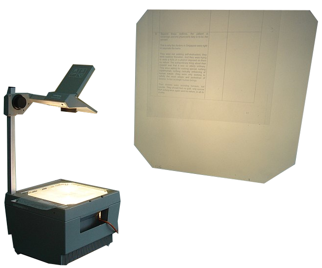

Os arquivos devem ser acessados preferencialmente no formato original StultusVisio, pois contém vídeos e outros conteúdos interativos impossíveis em PDF.
Aula sobre dor torácica
Apresentei esta aula no Hospital de Sobradinho - DF em outubro de 2023.
Slides para desktop em StultusVisio disponível aqui.
Versão em PDF aqui.
Aula sobre o artigo Appendiceal neoplasms: secondary analysis of the CODA trial
Apresentei este artigo em janeiro de 2024 no Hospital Regional da Asa Norte de Brasília-DF.
Slides para desktop em StultusVisio disponível aqui.
Versão em PDF aqui.
Caso clínico: abcesso hepático
Apresentado em 08/02/24 no Hospital Regional da Asa Norte em Brasília.
Acesse aqui a versão em StultusVisio.
Versão em PDF aqui.
Caso clínico: lesão de vértebra lombar L2
Apresentado em 22/02/24 no Hospital de BASE de Brasília.
Acesse aqui a versão em StultusVisio.
Versão em PDF aqui.